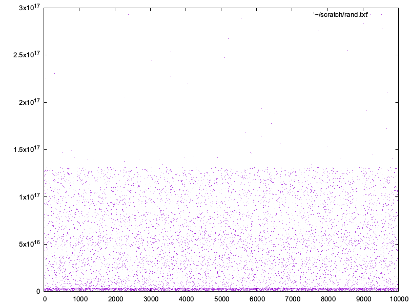
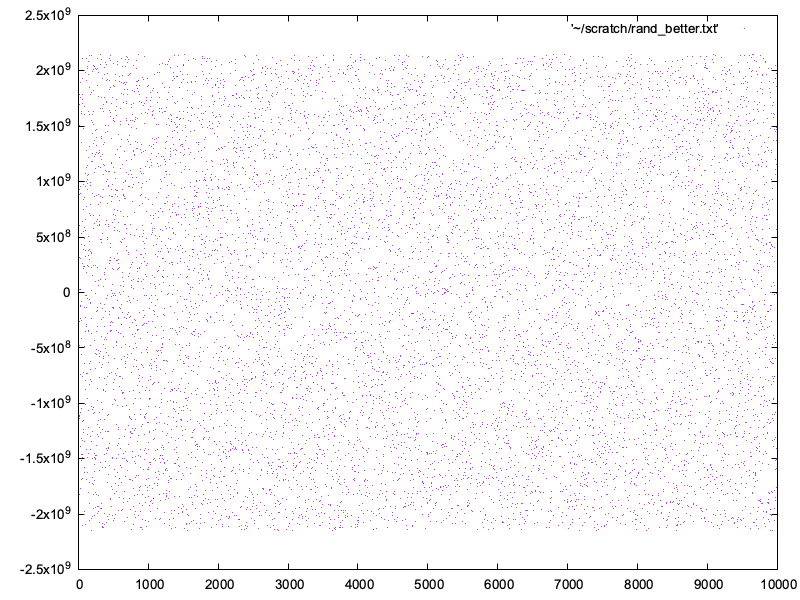

Philippe Gaultier
Philippe Gaultier
Philippe Gaultier
Philippe Gaultier
Published on 2025-08-03
Flaky tests are like a stone in your shoe, always reminding you they're here to annoy you.
We have a big end-to-end test suite at work, and unfortunately some of these tests are flaky which means that there is small chance they will fail. Multiply this seemingly small probability by many developers, each one running the test suite many times a day, and this all means this flakiness will fail the test suite (and thus block the CI, and thus block a release) every single day.
There could be many reasons for this flakiness but I believe I found one reason with a simple fix: bad randomness.
You see, each test in our suite dutifully creates its own resources at the very start, so that it can be run in parallel with other tests, and adding a new test does not impact the existing ones. Resources have random names so that they are 'unique'. It looks something like that:
const email = generateRandomEmail()
const accountName = generateRandomAccountName()
const account = createAccount(email, accountName)
But I noticed some tests were sometimes failing randomly: it seemed a test would accidentally act on resources belonging to another test. How could it be? Well, random names are only 'unique' (meaning, the chance of generate a name that already exists is very low, for some definition of low) if the random generator is 'good', for some definition of 'good'.
So let's see the implementation:
function generateRandomEmail() {
return Math.random().toString(36) + '@ory.sh'
}
Note: .toString(36) formats the number in base 36 (a-zA-Z0-9).
Try it by clicking this button:
All the random functions were some variant of this. Hmm, how good is Math.random? It used to be pretty bad but it then got better.
I thought, if this is the issue, then the fix should be quite simple and all tests would benefit from that fix.
One of the best advice I heard in the field of Software Engineering is:
Find a way to visualize your problem. Humans are visual creatures.
So let's generate a lot of random values (say, 10 thousand) with our logic:
const count = parseInt(process.argv[2])
for (let i = 0 ; i < count; i++){
const s = Math.random().toString(36);
// `s` is of the form: `0.xxxx` so we skip the `0.` with `slice()`
// since that does not add anything of value to our analysis.
const n = parseInt(s.slice(2), 36)
console.log(n);
}
Since Math.random().toString(36) generates a string, we parse it back to a number to be able to plot it.
And plot them with the venerable Gnuplot:
set terminal pngcairo size 800,600 enhanced font 'Arial,10'
set output 'rand.png'
plot '~/scratch/rand.txt' with dots
We run our scripts:
$ node rand.js 10000 > ~/scratch/rand.txt
$ gnuplot rand.gp
$ open rand.png
And we get:

That's bad randomness: there is a heavy bias towards lower values. What we would hope for is a well dispersed cloud of points, with no discernable clusters.
Is it due to the underlying implementation of Math.random ? Let's try just Math.random then:
Try it by clicking this button:
const count = parseInt(process.argv[2])
for (let i = 0 ; i < count; i++){
const n = Math.random();
console.log(n);
}

Oh, that's much better! So what's going on? Well, Math.random() essentially generates a random uint32. It then converts it as float number between 0 (inclusive) and 1 (exclusive). The distribution is of reasonable quality. But .toString(36) makes it significantly worse.I am not sure exactly why, but the docs for Number.toString mention:
However, the toString() method doesn't directly use this most precise representation of the number value. Rather, the algorithm uses the least number of significant figures necessary to distinguish the output from adjacent number values.
So what can we do? Recent Javascript version have added the crypto package with a cryptographically secure random generator. This should be good enough for us. Let's try that. We generate 4 random bytes and convert them to a uint32, to be as close as possible to Math.random() for our comparison:
const crypto = require('crypto');
const count = parseInt(process.argv[2])
for (let i = 0 ; i < count; i++){
const randomBytes = new Uint8Array(4);
crypto.getRandomValues(randomBytes)
const n = randomBytes[0] | (randomBytes[1]<<8) | (randomBytes[2]<<16) | (randomBytes[3]<<24)
console.log(n);
}
The result?

Looks good.
We can thus use this approach in our original functions to generate random strings. The easiest way is to use crypto.randomUUID() which generates a random v4 UUID with a cryptographically secure random generator:
function generateRandomEmail() {
return crypto.randomUUID() + '@ory.sh'
}
Try it by clicking this button:
Note for our use case, the fact that this is cryptographically secure is irrelevant. 'cryptographically secure' means that future values cannot be predicted based on the observation of past values. In the context of test values, we do not care about this property. It's just that this API is the most flexible, does not constrain us to deal with floats, and most ressembles the underlying OS APIs (arc4random, /dev/random, etc).
My take away: make sure you use a good random generator, otherwise you'll have hard to diagnose issues. What 'good' means is context dependent, but using a cryptographically secure random generator is a good start. Also make sure to not lower the randomness quality like .toString(36) did.
If you enjoy what you're reading, you want to support me, and can afford it: Support me. That allows me to write more cool articles!
This blog is open-source! If you find a problem, please open a Github issue. The content of this blog as well as the code snippets are under the BSD-3 License which I also usually use for all my personal projects. It's basically free for every use but you have to mention me as the original author.